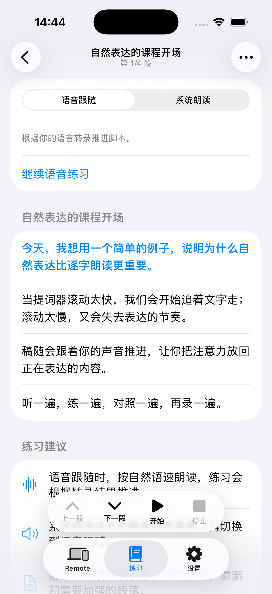
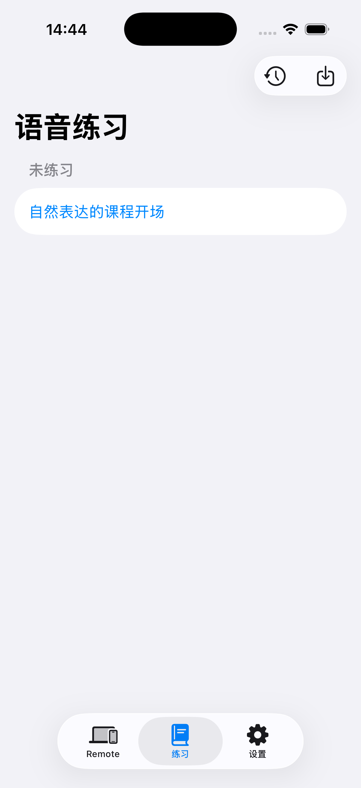
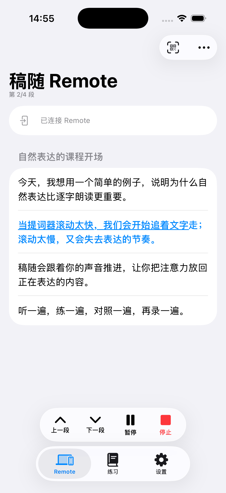
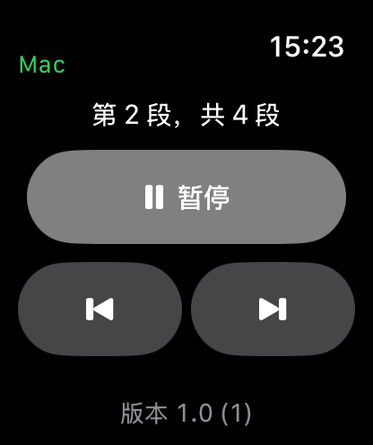

01 · Mac 提词器
先把讲稿放在眼前。
Mac 是主要的表达空间。打开支持的讲稿，让浮动提词器保持清晰可读；需要熟悉内容时，可以先用系统声音听一遍，感受句子的节奏。
功能与工作流
稿随把提词、练习、语音跟随和远程控制放在同一条工作流里，让你在真正开始录制时少一点追赶，多一点专注。
01 · Mac 提词器
Mac 是主要的表达空间。打开支持的讲稿，让浮动提词器保持清晰可读；需要熟悉内容时，可以先用系统声音听一遍，感受句子的节奏。
02 · Voice Follow
按照自己的自然语速表达，讲稿会根据语音转录的进度推进。它不是让你追赶固定速度，而是帮助你把注意力放回正在说的内容。

03 · iPhone 练习
在 iPhone 上完成语音练习，熟悉讲稿、段落和表达方式。你可以先把内容说一遍，再决定下一次录制要如何调整。

04 · Remote
用 iPhone 扫描 Mac 上的二维码连接 Remote。录制过程中如果临时加入即兴内容，或出现偶尔的段落错位，可以上一段、下一段地调整，不必打断表达。

05 · Apple Watch
Apple Watch 是 Remote 的免费配套补充。旋动 Digital Crown，或使用上一段、下一段控制，在更自然的距离上调整提词进度。

06 · 练习回看
练习完成后，可以回看只读的语音转录结果，对照自己的表达和讲稿内容，为下一遍练习准备方向。稿随不会自动改写你的讲稿。
把注意力放在下一次更自然的表达上。